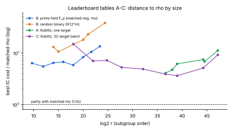
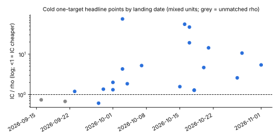

ic_framework + ecbench stack are mature end-to-end paths. Prime-field, Fpk, GHS, Diem, plane-quartic and P-256 modules are mostly single-study research code. Some (for example gaudry_quartic) measure one stage and have no relation collection or linear algebra.pack_point is exact only for n ≤ 62, Boolean solvers are capped at 64 variables, relation moduli must be r < 263, and the BigUint prime-field root finder brute-forces only p < 220. The wide paths koblitz_wide/koblitz_big reach n ≤ 191, but only on the Koblitz track. Characteristic 3 and extension fields are estimate-only in icx.suite/ is a stale fork of crypto's src/cryptanalysis: koblitz_index_calculus.rs is 14.4k lines there against 27.5k in crypto. hashed-ecdl-tensor is documented as "byte-identical" across repos but differs in 48 source files.pricing_ok=False). All of Table C is pre-gate. A root-finder replay regression is still open (72/168 identical). docs/ic/progress-timeline.json on main is malformed JSON.I swept both repositories with three parallel read-only surveys: crypto code, crypto results, and cryptanalysis code and results. I then re-checked the load-bearing claims by hand against code, ledgers and leaderboards (§9 lists the checks). Line counts come from wc -l and test counts from #[test] greps. I ran no experiments. The shared research-kb server and the lead atlas (crypto-autoresearcher) are not reachable from this session (scripts/research-kb: "no executable found"; no sibling checkout), so the report has no KB receipt. Novelty statements here are limited to what the two repositories record.
| Repository | Tracked files | Where IC lives | Role |
|---|---|---|---|
| crypto | 450,387 | src/cryptanalysis/ (663 .rs, 728k LOC; about 328k IC-related), ic_framework/, ecbench/, 7 crates, gpu/, src/bin/{ic,icx,icprog,ecbench,ic_autolab}, research/ic_* | Primary producer: engines, harness, leaderboard |
| cryptanalysis | 109,251 | suite/src/cryptanalysis/ (fork), C src/indexcalc.c, crates/prime-field-auxiliary-ic, experiments/ic-bench, xedni-*, chained-transfer-* | Baseline ledger (docs/ic/BASELINES.md), protocols, Xedni and transfer research |
src/cryptanalysis/ic_framework/ (27 files, 36.0k LOC, 211 tests) defines five stage traits in stages.rs: FactorBaseBuilder, Targets, DecompositionOracle, SystemSolver and RelationSolver. Each runs over a counted group. The cost unit is S = operations/√r. The stages are driven by ic bench/plan/sweep and by ecbench (85 files, 87.7k LOC, 646 tests), which charges every ECDLP method (rho, BSGS, kangaroo, IC) in one counted unit with replays.
| Stage | Registered implementations (verified from code) |
|---|---|
| Factor bases | prime: prime-abscissa, prime-projected-abscissa, prime-kummer, prime-isogeny, prime-interval, glv-orbit, cm-multiplier, explicit-x; binary: binary-subspace, koblitz-closure, koblitz-trace-zero, koblitz-orbit, compact-orbit-scan, cyclotomic, onb-weight, binary-multiplier; other: gls-line, hashed-affine, known-log |
| Decomposition oracles | table/walk: subtract, mitm, mitm-fiber, mitm-frobenius-*, ksum, ksum-frobenius, wsum, wwalk, residual-sweep; root-finding: rootfind-subtract(-gpu), rootfind-pairs, rootfind-mitm-prime-batch; algebraic: descent-algebraic(-fiber), symmetrised, koblitz-symmetrised, chained-x, pkm-semaev; other: cm-scalar-orbit, hashed-tensor |
| System solvers | f4-f2, buchberger-f2, m4gb-f2(-server) (GPL subprocess), matrix-f4, matrix-f5, inherited-f4 (+ -next/-legacy/-batched), fes-f2(-gpu/-wide), fes-then-*, exhaustive, crossbred-f2, xl-f2, sat-cdcl, primo-smt |
| Relation linear algebra | incremental-gauss (+ full-rank/checked/echelon), structured-gauss, sparse-cado = filter + block Wiedemann, filter + block Lanczos. An iterative answer is accepted only when two independently seeded solves agree. |
| Planning and verification | planner.rs (ic plan), dreg_forecast.rs (advisory degree of regularity), relation-replay-checker crate (independent; hard-wired to p = 231−1), certified-relations crate (6.9k LOC, 70 tests), replay_check, ic_validate, scripts/ic_audit/, tools/icms/ |
src/cryptanalysis)| Prefix | Files | LOC | Content |
|---|---|---|---|
koblitz_* | 22 | 79.9k | GGMP Frobenius-invariant IC; wide (n ≤ 127) and big (n ≤ 191) variants; AVX-512/VPCLMUL arithmetic; sparse LA |
| F4/F5/Gröbner | 18 | 58.0k | f4_fp (9.5k, 52 tests), tower F4, signature tower, Boolean F4, gf2_elim (M4RI, AVX-512) |
quartic* | 13 | 31.0k | Plane-quartic / genus-3 IC (GHS-weak family) |
jv_* | 29 | 27.5k | Joux–Vitse covers, sieves and decompositions over Fp5 and Fp6 |
gaudry_* | 11 | 19.7k | E(Fp3) full pipeline; E(Fp4) S₅ solve stage only |
semaev* | 16 | 19.6k | Summation polynomials S₃–S₅, symmetrised forms, SAT encodings |
p256_*, wide*, pq_* | 27 | 30.6k | P-256 factor-base studies; wide Boolean systems (≤ 128 vars); Petit–Quisquater descent |
hyperelliptic*, ghs_*, descent*, large_prime* | 31 | 27.8k | ADH/Gaudry Jacobian IC; GHS descent; large-prime variation |
suite/src/cryptanalysis/ (Rust): a fork of crypto's code, about 120k IC-related LOC including Koblitz 39.6k (280 tests), ic_framework 6.5k (12 files against 27 in crypto) and the boundary ledger 12.8k. No shared file is identical to its crypto counterpart. xedni_lift.rs (LLL/Babai lifting search) exists only here.src/indexcalc.c + linalg.c (3.8k LOC): IC in (ℤ/pℤ)*, p < 263, not ECDLP. Linear sieve Lp[1/2,1], Pohlig–Hellman, structured Gauss + Lanczos with Hensel lifting. It has CMake tests and is the one setting where IC crosses rho (near 56 bits).crates/prime-field-auxiliary-ic (4.7k LOC, 31 tests): m = 2 prime-field IC at p = 231−1 and 261−1. The factor base comes from auxiliary-map fibers. Decomposition is a centered resultant circuit with AVX2/512 paths. Linear algebra is union-find graph elimination with a certificate DAG.suite/python/indexcalc (4.4k LOC; SAT point decomposition for Koblitz curves, also near-copied in ecc2k130/). experiments/ic-bench (2.4k LOC; 2,644 workloads, toy end-to-end with calibrated rho). ic-candidate-catalog holds 1,000 design proposals, not measurements.suite/cuda (3.3k LOC) runs Boolean Macaulay and PDP kernels. The top-level cuda/, gpu/certicom and fpga/ directories are rho infrastructure, not IC.Legend: FULL end-to-end pipeline with relation collection, linear algebra and verified log, measured against rho; PARTIAL partial: one stage, toy sizes, synthetic, or a single study; NONE absent or estimate-only.
| Group / setting | Status | Decomposition | Size reach | Main code |
|---|---|---|---|---|
| Binary Koblitz Ka/F2n | FULL | Frobenius-orbit pair/MITM tables, S₃/S₄ Semaev + inherited F4, SAT, root-finding, large primes, k-sum | n ≤ 63 (u64); wide ≤ 127; big ≤ 191 (ECC2K-130, K-163); measured to n = 83 (log₂ r 52.9) | koblitz_index_calculus.rs (27.5k, 216 tests), inherited_f4.rs, koblitz_sparse_la.rs |
| Random binary E/F2m | FULL | Subspace bases, S₄ "pairs then root-find X₃", SAT, trace-zero | Table B up to 24.4-bit r | semaev_decomp.rs, binary_semaev*, sat.rs |
| Prime field E/Fp (generic) | FULL generic / PARTIAL algebraic | Pair/k-sum tables (generic, √r-bounded); PKM Kummer tower + pkm-semaev (built, not competitive); automorphism orbits for j = 0, 1728 | Table B to 23.4 bits; bitop ladder to 40 bits; residual collector to 36 bits; aux-IC at 31/61 bits | ic_framework, prime_orbit_index_calculus.rs, pkm_semaev.rs, prime-field-auxiliary-ic |
| E(Fp3) Gaudry/Diem | PARTIAL | Subspace base, symmetrised S₄, Macaulay + eigenvector solve | Small p; 528–4,000× rho | gaudry_cubic*.rs |
| E(Fp4), E(Fp5), E(Fp6) | PARTIAL | S₅ solve (k = 4, no pipeline); Joux–Vitse (n−1)-decomposition; JV genus-3 cover sieve | k = 5 complete DLP at p = 31, 61; JV weak class at p ≈ 10³ | gaudry_quartic.rs, jv_* (29 files) |
| Hyperelliptic g = 2, 3, 4 | FULL (toy) | ADH/Gaudry degree-1 base, Cantor arithmetic, sparse elimination | p < 262 (native crate); toy rows | hyperelliptic_index_calculus.rs, crates/hec-native-ic, hecx |
| Plane quartics (genus 3), GHS-weak E/Fq3 | FULL | Diem-style double large prime, block Lanczos reuse | q up to about 221–22 | quartic*, plane_quartic_pic*.rs |
| Weil descent / GHS on general curves | PARTIAL | GHS descent + Gaudry IC on the descended Jacobian (planted DLP) | Synthetic; Menezes–Qu lemma 6 step not implemented | ghs_* (only literal TODOs in the IC code) |
| Characteristic 3 | NONE | None | Estimate-only in icx; designed fpk.rs / field_dispatch.rs do not exist | gf3m.rs (arithmetic only) |
| Hashed / tensor IC (Bochum, App. D.4) | PARTIAL | Compact Boolean encodings, recursive tensor contraction | Work unit uncalibrated; no 131-bit workload | 5 implementations (§6.3) |
| Xedni calculus | PARTIAL | LLL/Babai lift search | Success per trial ∝ ≤ 1/p; char 2 gated | xedni_lift.rs (cryptanalysis) |
| (ℤ/pℤ)* (control) | FULL | Linear sieve | p < 263 | src/indexcalc.c (cryptanalysis) |
| Engine | File (LOC) | Status |
|---|---|---|
| Degree-bounded F4 over Fp, p < 232 | f4_fp.rs (9,461) | Real; certified-solution fix landed. Main currently has a fall-degree merge break (PR #4559, 12 replay tests). |
| Tower F4 (PKM ring), Faugère–Lachartre | f4_fp_tower*.rs (7.6k) | Solving degree still rises with N (m = 3: 6, 6, 7, 7) |
| Signature F5/GVW (tower) | sig_fp_tower.rs | Abandoned; up to 28× memory |
| Boolean F4 (Gebauer–Möller) | pq_f4_f2.rs (3.4k) | ≤ 64 vars; docstring still claims a timed-out set "generates the same ideal" (false) |
| Inherited F4 (default oracle) | inherited_f4.rs (5.4k) | from_system unsafe below the generator degree (open audit item) |
| FES (Gray-code exhaustive), CPU/GPU | mq_fes.rs, gpu/fes | Lowers wall time but increases counted work; returns 1 solution on an empty system (defect) |
| Crossbred, XL, CDCL-SAT with XOR | crossbred.rs, pq_xl.rs, sat.rs (8.1k) | XL is a toy; SAT is a from-scratch CDCL; WDSat by subprocess |
| M4GB | m4gb_oracle.rs | GPL-3 subprocess; n ≤ 16; no operation counters, so it cannot back a leaderboard row |
| Reach (FRAMEWORK §8) | — | F4 decides ≤ 28 unknowns, FES 32/36, exhaustive 26, xl-f2 10. No engine beats exhaustive search. |
The leaderboard (docs/ic/LEADERBOARD.md, leaderboard.json) has three tables, each in its own unit, so ratios are comparable only within a table. Figure 1 plots the best recipe per curve as IC cost ÷ matched rho, where 1.0× is parity.

make_charts.py over leaderboard.json.| Family (table) | Best row | log₂ r | IC/rho | Largest row | Standing |
|---|---|---|---|---|---|
| Koblitz, one target (A) | icv1-f2m47-t22705043 | 36.6 | 4.08× | n61, 47.2 bits: 11.1× | validated with caveats |
| Koblitz, 32-target batch (C) | icv1-f2m41-tm2308219 | 39.0 | 3.62× | n61: 9.2× | pre-gate |
| Prime field (B) | icv1-fp12-t19 | 11.9 | 5.47× | fp24, 23.4 bits: 13.5× | validated with caveats |
| Prime, ksum5 re-measure (outside A–C) | all 8 rows | 10–23 | ≈5.0–6.9× | — | validated |
| Random binary (B) | icv1-f2m18-t393 | 15.0 | 10.6× | f2m27, 24.4 bits: 38.2× | validated with caveats |
| Koblitz n = 83 (cryptanalysis BASELINES) | K₁ R1 on D4 closure base | 52.9 | 2.04× | — | point estimate; factor base uncharged (lower bound); one host class |
| Curve25519-family generic autolab | k = 20–32 | 20–32 | ≈1.4–1.9× | — | not gated; √r-bounded track |
Every ranked family worsens with size. The prime bitop ladder goes from 6.2× at 16 bits to 78.3× at 40 bits (fitted α 0.646 against rho's 0.504). The leaderboard's total exponents are prime 0.447 against 0.372 and char-2 0.538 against 0.392. The new prime collection-frontier analysis (2026-11-17, unverified) derives an optimum B ≈ p1/3 with total cost p2/3, so the gap grows as p1/6. Cryptanalysis native panels N15→N27 show rho/IC falling from 0.548 to 0.086. Constant-factor engineering is being outrun by exponent drift: any lever that does not change the exponent loses ground with size.

leaderboard.json progress series; mixed curves and units, values > 200× omitted). The early sub-1 points (Sept.) were against unmatched or weak rho; with a matched rho, the trajectory sits at 1.3–15×.| Limit | Where | Effect |
|---|---|---|
Single-word field/point packing; pack_point exact for n ≤ 62, unguarded at 63 | both repos' Koblitz/binary core | Silent key collision at n = 63; standard sizes need the separate wide/big paths |
Boolean systems ≤ 64 vars (≤ 128 in wide_groebner) | pq_f4_f2, solvers | Caps the decomposition dimension |
Relation modulus r < 263 (LA ModWord) | koblitz_sparse_la, framework LA | No standard-size linear algebra outside ic_wide |
find_roots_fp brute force; returns [] silently above 20-bit p | ec_index_calculus.rs:354 | Toy-only prime path; the fast Cantor–Zassenhaus exists but is rarely wired |
| Single-threaded counting | FRAMEWORK §8 | Wall-clock studies need separate native paths; GPU paths only for root-finding and FES |
relation-replay-checker fixed to p = 231−1 | crate | Independent verification does not cover other fields |
Char 3, Fpk in icx | icx | Estimate-only; the attack regime is never selected |
| Capability | Implementations | Where |
|---|---|---|
| Hashed / tensor IC | 5 (+2 copies) | hashed-ecdl-tensor (crypto 32.4k; cryptanalysis 7.2k; bindings 21.2k), ecdl-tensor-ic, hashed-ecdl-cpu, ic_framework/hashed.rs, ecbench/hashed_native.rs |
| Hyperelliptic IC | 3 | BigUint lib, hec-native-ic (own workspace; example depends on a research/ path), ecbench hec/hyper_ic |
| Wiedemann / Lanczos | ≥ 4 | ic_framework/linalg, koblitz_sparse_la, pq_wiedemann, gaudry_cubic::wiedemann_* |
| Gaussian elimination variants | 65 files | e.g. ec_index_calculus (9 fns), koblitz_groebner (23), f4_fp (15) |
| Boolean F4 / Macaulay | ≈ 6 | pq_f4_f2, matrix_f5_f2, f4_gf2, koblitz_groebner, wide_groebner, inherited_f4 |
| IC core across repos | 2 forks | cryptanalysis suite/ diverged: koblitz_index_calculus 14.4k vs 27.5k, ic_boundary 8.5k vs 22.4k, ic_framework 12 vs 27 files |
The "must remain byte-identical" statement in both hashed-ecdl-tensor READMEs is false: diff -rq over src/ lists 48 differences. Only the Hexagon-scoped files match.
fes-f2 returns 1 solution on an empty system; buchberger-f2 panics at n = 25–26; pack_point collides at n = 63; Oakley Group 3 records the wrong order.f4_fp fall-degree merge (#4559), and ecbench failing to compile at 3b0840b6f2. The autolab binary has no recorded commit (validator finding F2).pricing_ok=False; Table C is entirely pre-gate; pcc has 0 verified claims out of 3,544. Several cryptanalysis native panels retain failed A/A controls ("invalid for promotion").gpu/*/README.md say "No kernel here has been run on a GPU", contradicting the A100 report research/ic_gpu_measure_20261112. docs/ic/progress-timeline.json is invalid JSON (line 565, a missing },{). A stray koblitz_index_calculus.rs.rej.orig is in src/..unwrap(), 258 panic!, 167 "unsupported" paths. There are almost no TODO markers, so limitations live in prose docs, not in code.| Line | Verdict |
|---|---|
| Koblitz online-only advantage | Closed; generic bound S·T² ≳ r/2n |
| Structured prime factor bases (Dickson, geometric, quadratic) | κ slope ≈ 0 against 1/3 needed |
| F6-IC; GPU FES as a counted lever | No gain once geometry is charged; FES lowers wall time but worsens counted work |
| N83 degree-two image calculus; algebraic linear S₃ ladder | Rejected by gates; 36,440× rho at n41 |
| Twist factor-base union; chained-transfer q223 route | Algebraic obstructions |
| Xedni (generic and j = 0) | Lift success ≤ 1/p; 0/13,750 wide-shift relations |
| Joux–Vitse pair-only; pair claw | Relabelling; BSGS-like (2.2× strong rho) |
| Curve-derived binary subspaces | No better than random |
| g2plus L04, L07 (Prym), L02 at g = 3 | Killed |
The success criterion counts every verified, measured improvement over the IC baseline, with beating rho as the long-term goal. Below, items are ordered by expected value per unit of effort. P0 makes future improvements countable. P1 moves measured rows. P2 targets the exponent, which is the only way to close a gap that grows with size.
| Action | Why / acceptance |
|---|---|
Fix the root-finder replay regression (72/168) and the f4_fp build break; pin the autolab binary commit | Unblocks promotion of stage counters. Acceptance: replay-all 168/168 identical on main, in CI. |
Close pricing_ok=False on Tables A/B: charge native work for both arms across the §5a 0/0.1/1 band; validate or retire Table C | Turns "validated with caveats" into clean gate passes; the prerequisite for any T-tier claim. |
| Get first pcc claims to verified: start with the n = 83 2.04× row and Table A n47 | Today 0/3,544 are verified, so no number can be cited as more than an assertion. |
| Apply the L10 1.73× quartic-rho repricing to the existing quartic rows | Keeps the GHS-weak rows honest. |
Hygiene: fix progress-timeline.json; update FRAMEWORK §8/§9 and the GPU READMEs; remove .rej.orig; correct the "byte-identical" claim; add a guard at n = 63 in pack_point; fix the fes-f2 empty-system and buchberger-f2 panics | Cheap, and removes silent-wrong-answer risks. |
| Action | Why / acceptance |
|---|---|
| One shared sparse linear-algebra crate (filter + block Wiedemann/Lanczos, multi-word modulus, two-seed acceptance) used by every pipeline | Replaces ≥ 4 Wiedemann/Lanczos copies and 65 elimination sites. Lifts the r < 263 cap. Session logs already name "replace O(B³) dense LA with sparse". Acceptance: the same relations give the same log on all pipelines, and counted LA ops do not increase. |
Multi-word field/point layer (one Field trait over u64 / u128 / limbs, for F2n and Fp) | Removes the n ≤ 62 / 64-var ceilings outside the Koblitz-only wide paths, and lets icx run instead of estimate. This is the engine audit's "real blocker to standard sizes". |
| Attack cold setup and rank stages | Setup is about 99% of cold S at n41–61. At n = 83 the rank stage is 35.5% and the index build 39.0%. Make the batched lock-step table solver the prime default (53–177× faster than the sweep) and cut the O(B²) table build. |
De-fork cryptanalysis suite/: depend on crypto crates (or vendor them by a pinned hash) instead of a hand-diverged copy; collapse the hashed/tensor family to one crate and the hyperelliptic family to one engine with a native backend | Ends cross-repo drift: the n41–83 baseline rows already use crypto binaries while their evidence lives in cryptanalysis. |
Wire Cantor–Zassenhaus (and the radical d ≤ 4 finder in flight) into every prime root-finding path; drop the silent-[] brute force | Removes the 20-bit prime ceiling. |
| Finish the Faugère–Lachartre split for Boolean F4 (#4562); land the three lost Gröbner engines with counters | Engine work that was already shown positive but never landed. |
| Lever | Rationale / cheapest falsifier |
|---|---|
| Closure solving degree ≤ 3 at m = 4, held at ℓ ≥ 5 (CERTICOM131 falsifier); relation shape 5+-sums for ECC2K-130 | The only stated Koblitz route to a smaller exponent. Falsifier: degree of regularity rises at the next ℓ. |
| Prime field: confirm or break the p2/3 collection law at 36–40 bits; look for factor bases with κ slope > 0 | If p2/3 holds, generic prime IC is exponentially behind rho (p1/2). Effort should then go only to algebraic oracles with a falling solving degree. |
| Transfer-aware IC: widen the operational reach of the JV weak class (currently about 1% of curves) and the GHS-weak family, with fully charged transfer cost | The only families below rho today. Counts as T-tier only when transfer and identification are charged on cold, public, preregistered targets. |
| Genus 2/3: g2plus L01 pencil sieve (3–5×), L03 base re-balance (−36–40%), the genus-3 positive-control W arm (1.72×) | Cheapest route to a validated sub-rho Jacobian row. Rerun L06/L08 per their notes. |
| Deprioritise: the √r-bounded generic tracks (k-sum, pair claw, Curve25519 autolab) as rho-beating vehicles | Useful as baselines and engineering testbeds only: they cannot cross rho by construction. |
[pcc:unverified]) quoted from the paths given. The survey agents' LOC and test counts were spot-checked, not exhaustively re-derived.Re-checked by hand in this session: pcc.py standing-by-type (data 2068, interpretive 1310, literature 15, untyped 151: all unverified); MATRIX_NAMES in ic_framework/linalg.rs:1146; the find_roots_fp doc at ec_index_calculus.rs:345–354; FRAMEWORK.md lines 868 and 916; koblitz_index_calculus.rs.rej.orig present; five GPU READMEs with "No kernel here has been run"; 663 .rs files under src/cryptanalysis; the leaderboard GHS-weak lines 938, 965 and 1067; the hashed-ecdl-tensor src diff (48 entries) against README line 33; cryptanalysis BASELINES.md n = 83 row (2.043); the progress-timeline.json parse error at line 565.
Primary sources. crypto: docs/ic/{LEADERBOARD.md, leaderboard.json, SUCCESS_CRITERIA.md, FRAMEWORK.md, ENGINE_AUDIT_AND_DESIGN.md, SOLVER_SELECTION.md, GROEBNER_F4F5F6_AUDIT_20261010.md, M4GB_INTEGRATION_ASSESSMENT_20261110.md, STANDARD_PANEL.md, CERTICOM131_IC_PROGRAM.md, T20_REVIEW_20261020.md}, RESEARCH_IC_LEADS_ASSESSMENT_20261018.md, RESEARCH_PRIME_FIELD_BREAKTHROUGH_PROGRAM.md, RESEARCH_ECC2K130_IC_FEASIBILITY.md, research/{prime_ic_collection_frontier_20261117, bitop_ladder_20261019, g2plus_leads_20261116, twist_index_calculus_20261020, jv_walk_charge_20261111, ic_gpu_measure_20261112}, docs/ACTIVE.md, docs/session-logs/2026-11-17.md. cryptanalysis: docs/ic/BASELINES.md, suite/docs/ic/ENGINE_AUDIT_AND_DESIGN.md, papers/ecdlp-constant/sec-indexcalc.tex, experiments/{ic-bench, prime-field-auxiliary-ic, ic-pair-index-gather-20261117, chained-transfer-public-target}, research/xedni_lift_success_20261112/RESULTS.md, benchmarks/progress/PROGRESS.md.
Figures are regenerated by python3 docs/ic/state-of-ic-20261118/make_charts.py (run from the crypto root).